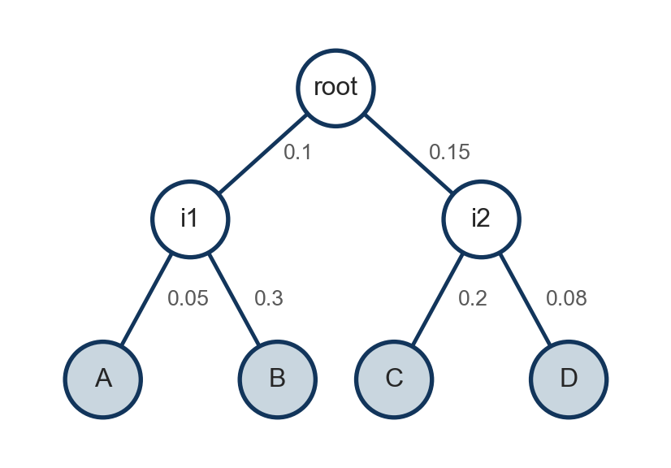
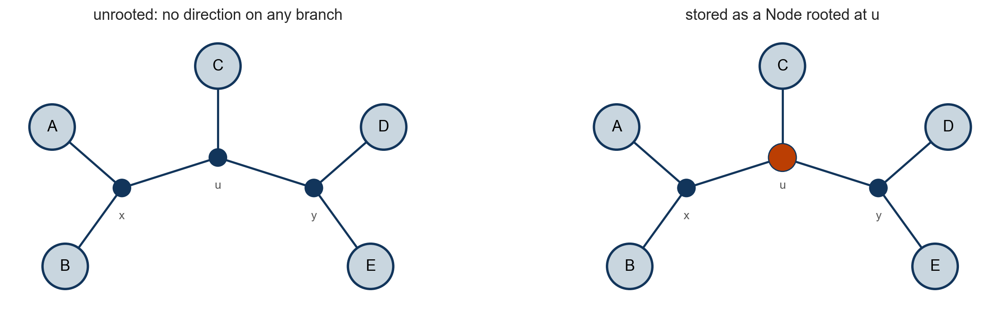
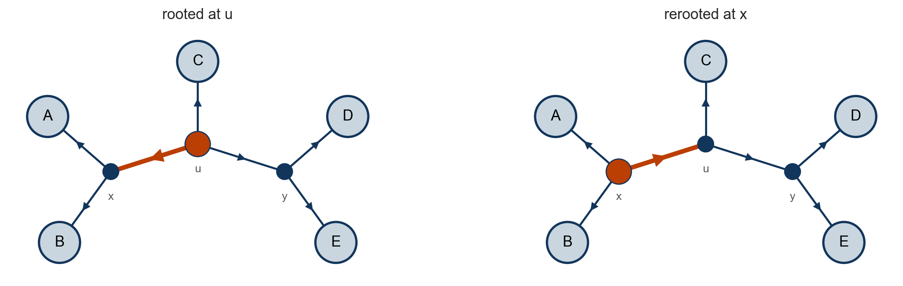
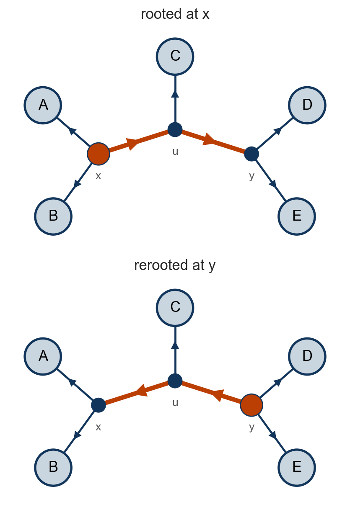
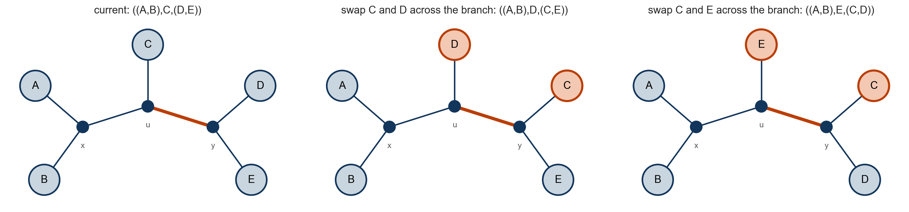
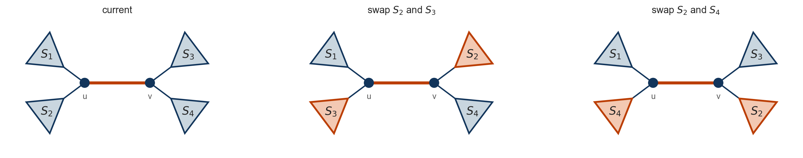

Lab 5: Felsenstein’s algorithm, rerooting and nearest neighbour interchange
Seong-Hwan Jun
Department of Biostatistics and Computational Biology, University of Rochester Medical Center
Today
Where this fits
In Lab 4 you built a Node class, wrote the two traversals, and simulated an alignment down a four-taxon tree. In the belief propagation lecture, the likelihood of an alignment was computed by a bottom-up pass: Felsenstein’s pruning algorithm.
Implement the bottom-up pass for a whole alignment, and compute the likelihood of the sequences you simulated in Lab 4.
Store an unrooted tree as a Node, and move its root to another internal node. The likelihood should not change.
Change the topology of a tree in place by a nearest neighbour interchange (NNI), and undo it.
What you should have
From Lab 4: the Node class, preorder, postorder and path_to_root, jc69(t), and simulate_sites(root, n_sites, rng), which attaches v.seq, an integer array with \(A, C, G, T = 0, 1, 2, 3\), to every node.
Add one attribute to your Node class. In __init__, set self.likelihood_table = None. The bottom-up pass stores its result there.
tree = build_tree()simulate_sites(tree, n_sites=300, rng=np.random.default_rng(5))by_name = {v.name: v for v in preorder(tree)}for name in"ABCD":print(f"{name}{to_string(by_name[name].seq[:48])} ...")
A GTATCTCCTAACGCAAAAATAGTGCGCTACATACGCGGGATGTCCTAA ...
B GTAACCACTACTGCCTTAACGATTCGCTACATACGCGGCATGTCCTAA ...
C GCAACGGTTACCGGATAAAAACTACCCGGTTTAGCAGGGGGGGTCTAA ...
D GTATCGGCTACCGCATAAATACTTCCCAATTGAGCACGTATGATCTAA ...
With np.random.default_rng(5) and 300 sites, these are the rows you simulated in Lab 4.
The bottom-up pass
A table per node

The pruning recursion from lecture is the same for every column, so run it on all \(n\) columns at once. The likelihood table of node \(v\) is a \(4 \times n\) matrix \(L_v\) whose entry in row \(a\), column \(s\) is
\[
L_v(a, s) = p\big(\text{leaves below } v \text{ at site } s \mid z_v^{(s)} = a\big).
\]
At a leaf, column \(s\) is the indicator of the observed nucleotide: \(L_v(a, s) = \mathbb{1}[a = y_v^{(s)}]\).
The transition matrix of a branch of length \(t\) is \(P(t) = \exp(Qt)\), computed with scipy.linalg.expm(Q * t). For Jukes-Cantor, \(Q\) has \(1/3\) off the diagonal and \(-1\) on it, and expm(Q * t) agrees with your jc69(t).
Task 1: a cherry in matrix form
A cherry is a node \(v\) whose two children \(c_1\) and \(c_2\) are leaves, with branch lengths \(t_1\) and \(t_2\). In the Lab 4 tree, i1 with children A and B is one.
Write the pruning rule for \(L_v(a, s)\) in terms of the entries of \(P(t_1)\), \(P(t_2)\), \(L_{c_1}\) and \(L_{c_2}\).
Write the whole table \(L_v\) as a matrix expression in \(P(t_1)\), \(P(t_2)\), \(L_{c_1}\) and \(L_{c_2}\), using \(\odot\) for the elementwise product. Check that every factor has the right shape.
Suppose \(v\) is the root, with stationary distribution \(\pi\). Write the vector of the \(n\) site likelihoods \(p(\mathbf{y}^{(s)})\), and the log likelihood of the alignment, in terms of \(L_v\) and \(\pi\).
Task 2: bottom_up
Implement your answers to Task 1, parts 1 and 2, on the Node class. In numpy, @ is the matrix product and * is the elementwise product.
from scipy.linalg import expmdef leaf_table(seq):"""4 x len(seq) array: column s is the indicator of the nucleotide seq[s]."""# TODOraiseNotImplementedErrordef bottom_up(root, Q):"""Set v.likelihood_table for every node, in post-order, with P(t) = expm(Q * t). Return the root's table."""for v in postorder(root):if v.is_leaf():# TODO: v.likelihood_table = leaf_table(v.seq)raiseNotImplementedErrorelse:# TODO: your answer to Task 1, part 2, with one factor expm(Q * t_c) @ L_c per child c,# whether c is a leaf or not (loop over v.children: do not assume two children)raiseNotImplementedErrorreturn root.likelihood_table
Task 3: the marginal likelihood of each site
The root’s table holds \(p(\text{all leaves at site } s \mid z_{\text{root}}^{(s)} = a)\) for every \(a\) and \(s\). Average over the root state with the stationary distribution \(\pi\) to get the marginal likelihood of each site, your answer to Task 1, part 3.
def site_marginal_likelihoods(table, pi=np.full(4, 0.25)):"""Length-n vector: entry s is p(y^(s)) = sum_a pi_a table[a, s]."""# TODOraiseNotImplementedErrordef log_likelihood(table, pi=np.full(4, 0.25)):"""Sum over sites of log p(y^(s))."""# TODOraiseNotImplementedError
Your output should match these three numbers to the digits shown. The last one is the log likelihood in the belief propagation lecture.
Unrooted trees
Five taxa, seven branches

An unrooted binary tree on five taxa has two pairs and a middle taxon: three internal nodes, five pendant branches and two internal branches. To store it, root it at an internal node, which then has three children. bottom_up never assumed two children, so it runs unchanged.
The Jukes-Cantor model is time reversible and \(\pi\) is its stationary distribution, so the likelihood does not depend on where the root is placed.
Build one by hand
Build \(((A,B),C,(D,E))\) rooted at \(u\). Each node’s branch_length is the length of the branch to its parent.
u = Node("u")x = u.add_child(Node("x", 0.06))# TODO: C (0.12) as the second child of u, and y (0.02) as the third# TODO: A (0.06) and B (0.10) under x; D (0.08) and E (0.05) under ytree5 = ushow(tree5)
u (0.0)
x (0.06)
A (0.06)
B (0.1)
C (0.12)
y (0.02)
D (0.08)
E (0.05)
simulate_sites(tree5, n_sites=80, rng=np.random.default_rng(5))ll_u = log_likelihood(bottom_up(tree5, Q))print(f"log likelihood with the root at u: {ll_u:.6f}")
log likelihood with the root at u: -277.356054
Task 4: rerooting
Rerooting at an internal node \(w\) stores the same unrooted tree with \(w\) as the root. The nodes, the branches and their lengths do not change; only the directions do, since every branch must point away from the new root.

The path from \(x\) to the old root \(u\) is the single branch \(u\)–\(x\). It is the only branch whose direction changes: \(u\) becomes a child of \(x\).
A longer path
Start from the tree rooted at \(x\) and reroot at \(y\). The path from \(y\) to \(x\) has two branches, \(y\)–\(u\) and \(u\)–\(x\), and both flip.
Removing a branch leaves two connected components; the parent end of the branch is the end in the root’s component. If \(w\) and the old root are in the same component, the parent end stays. They are in different components exactly when the branch is on the path from \(w\) to the old root, and then it switches. So reversing the links on that path is enough.
branch_length sits at the child end. In the loop on the next slide, parent becomes a child of child, so the length of the branch between them moves from child to parent: each branch length stays with its branch.
The path is path_to_root(w) from Lab 4: [w, w.parent, ..., old root].

reroot
def reroot(new_root): path = path_to_root(new_root) # new_root, ..., old root (your Lab 4 function) lengths = [v.branch_length for v in path[:-1]] # lengths[k]: the branch between path[k] and path[k+1]for k inrange(len(path) -1, 0, -1): # walk down from the old root parent, child = path[k], path[k -1]# TODO: remove child from parent's children, add parent to child's children,# set parent's parent to child, and give parent the length lengths[k - 1]raiseNotImplementedError new_root.parent =None new_root.branch_length =0.0return new_root
import copyt = copy.deepcopy(tree5) # keep tree5 as built for the NNI slidesnames = {v.name: v for v in preorder(t)}for name in ["x", "y", "u"]: t = reroot(names[name])assert np.isclose(log_likelihood(bottom_up(t, Q)), ll_u)print(f"root at {name}: {len(t.children)} children, log likelihood {log_likelihood(bottom_up(t, Q)):.6f}")
root at x: 3 children, log likelihood -277.356054
root at y: 3 children, log likelihood -277.356054
root at u: 3 children, log likelihood -277.356054
Nearest neighbour interchange
Moving between topologies

Take the internal branch \(u\)–\(y\). Two subtrees hang at the \(u\) end, the cherry \((A,B)\) and the leaf \(C\), and two at the \(y\) end, the leaves \(D\) and \(E\).
Swap \(C\) with \(D\) across the branch to get \(((A,B),D,(C,E))\), or \(C\) with \(E\) to get \(((A,B),E,(C,D))\). Each subtree takes its branch length with it, and \(u\)–\(y\) keeps its length.
Task 5: which swaps give new trees?
Across \(u\)–\(y\) there are four ways to swap a subtree at the \(u\) end with a subtree at the \(y\) end: \(C\) with \(D\), \(C\) with \(E\), \((A,B)\) with \(D\), and \((A,B)\) with \(E\).
For each swap, write which two subtrees end up together at each end of \(u\)–\(y\). How many different unrooted trees do the four swaps give, and which swaps give the same tree?
Hint. The internal nodes of an unrooted tree carry no labels. Two trees are the same if the same two pairs of subtrees sit at the two ends of the branch, whichever end is called \(u\).
Nearest neighbour interchange in general

With \(S_1 = (A,B)\), \(S_2 = C\), \(S_3 = D\) and \(S_4 = E\), this is the example. Nothing there used that \(C\), \(D\) and \(E\) are leaves: each \(S_i\) can be any subtree, and the same swaps apply.
Every internal branch \(u\)–\(v\) has four subtrees attached, two at each end. There are three ways to pair them across the branch, and an NNI move changes the tree to one of the other two.
The five-taxon tree has two internal branches, so it has four NNI neighbours.
Task 6: apply_nni
A move is a tuple (u, v, c, s): on the internal branch from u down to its child v, swap a child c of v with a child s of u other than v.
def apply_nni(move):"""Swap c and s in place, keeping every other child where it is.""" u, v, c, s = move i = v.children.index(c) j = u.children.index(s)# TODO: put s at position i in v.children, and c at position j in u.children# TODO: set s's parent to v, and c's parent to uraiseNotImplementedErrordef undo(move): u, v, c, s = movereturn (u, v, s, c)
A random NNI move
To pick a move at random: choose an internal branch uniformly, then one subtree at each end of it, and swap them.
def sample_nni_move(root, rng):"""A random move (u, v, c, s): a uniform internal branch u-v, then c below v and s below u.""" branches = [v for v in preorder(root) ifnot v.is_leaf() andnot v.is_root()] # the branch above v v = branches[rng.integers(len(branches))] u = v.parent c = v.children[rng.integers(len(v.children))] # a subtree at the v end others = [w for w in u.children if w isnot v] s = others[rng.integers(len(others))] # a subtree at the u endreturn (u, v, c, s)
before = {v.name: (v.parent.name if v.parent elseNone, v.branch_length) for v in preorder(tree5)}rng = np.random.default_rng(1)for _ inrange(5): mv = sample_nni_move(tree5, rng) ll_before = log_likelihood(bottom_up(tree5, Q)) apply_nni(mv)assert mv[2].parent is mv[0] and mv[3].parent is mv[1] # c now hangs from u, s from v ll_after = log_likelihood(bottom_up(tree5, Q)) apply_nni(undo(mv)) ll_undone = log_likelihood(bottom_up(tree5, Q))assert before == {v.name: (v.parent.name if v.parent elseNone, v.branch_length) for v in preorder(tree5)}print(f"branch {mv[0].name}-{mv[1].name}, swap {mv[2].name} with {mv[3].name}: "f"before {ll_before:.3f}, after {ll_after:.3f}, undone {ll_undone:.3f}")
branch u-x, swap B with y: before -277.356, after -288.370, undone -277.356
branch u-y, swap D with x: before -277.356, after -277.344, undone -277.356
branch u-y, swap E with x: before -277.356, after -273.308, undone -277.356
branch u-x, swap B with C: before -277.356, after -288.430, undone -277.356
branch u-x, swap B with C: before -277.356, after -288.430, undone -277.356
Checklist before you submit
What to submit
A Quarto document lab5.qmd with your written answers to Tasks 1 and 5, and Tasks 2 to 4 and 6 with every check passing. Discuss freely; write your own code.